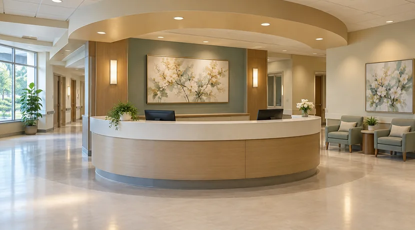

외래 진료와 검사 결과를 바탕으로
의료진이 수술의 필요성을 판단합니다.
이 단계에서 수술 방법, 예상 효과,
회복 과정에 대해
충분한 설명과 상담이
진행됩니다. 환자가 동의하면 수술 날짜를
확정 됩니다.
수술을 안전하게 진행하기 위해
혈액 검사, 영상 검사 등
사전 검사가 진행됩니다.

수술 후 회복실 또는 병실에서
회복 상태를 확인하며 통증 관리와
치료가 이어집니다.
환자 상태에 따라
재활 치료가 병행될 수 있습니다.